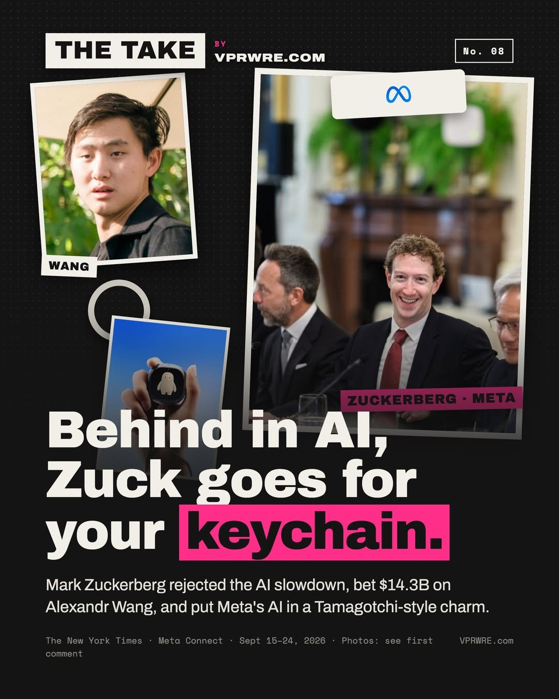

The AI race
Behind in AI, Zuck goes for your keychain.
Mark Zuckerberg won’t slow down for anyone. Then he put Meta’s AI on your keychain.

On Sept 12, Anthropic CEO Dario Amodei asked AI labs to slow down; Sam Altman and Elon Musk agreed. On Sept 15, Zuckerberg said no: every lab should set its own safe pace. His proof is that Meta already delayed its Muse agent by months for safety. “We didn’t call for everyone else to do this before we would.”
On Sept 24 at Meta Connect, his “one more thing” was the Muse Charm, a Tamagotchi-like keychain you tap to talk to Muse. No price yet. It’s due for the holidays.
Context: Meta paid $14.3B for 49% of Scale AI last June to bring in Alexandr Wang to run Superintelligence Labs. The New York Times reported in September that Meta still trails Anthropic and OpenAI, with a bigger model, “Watermelon,” weeks out.
In fairness: nobody has bought one yet, and pocket AI gadgets have flopped before.
Our take: Meta is racing for your pocket, not the podium. It doesn’t need the smartest model, just the closest one.
The smartest AI wins benchmarks. The closest wins people.
Would you clip an AI to your keys?
Background
Meta’s push into frontier AI is run by Meta Superintelligence Labs, which Alexandr Wang leads. Meta brought him in through a $14.3 billion investment for a 49 percent stake in Scale AI, the company he ran, in June 2025. In April, the lab released a model called Muse Spark that did well on standard benchmarks but was not presented as a frontier system. In July, Business Insider reported that Mr. Wang told staff its successor, code-named Watermelon, had matched OpenAI’s GPT-5.5. By then OpenAI had already released GPT-5.6.
Muse, the agent Meta released on Sept. 8, takes actions for users, such as booking flights or sending emails. Meta says it has been downloaded more than 2.5 million times. It has also drawn privacy complaints, and Decrypt reported that Amazon blocked it from shopping on its site.
The Muse Charm, unveiled at the end of the Sept. 23 Connect keynote, is a puck about the size of a Tamagotchi. It has a screen of roughly two inches, front and rear cameras, and its own 5G connection. Users tap a fingerprint sensor to make it listen. Meta has not announced a price and is aiming for a December release.
Sources
- Zuckerberg distances Meta from calls for a coordinated approach on an AI slowdown Local 10 (WPLG)
- Zuckerberg Pushes Back on Coordinated AI Slowdown, Says Labs Can Act Alone Decrypt
- Mark Zuckerberg’s ‘One More Thing’ Was an AI Keychain?! Gizmodo
- Meta’s New AI Toy Is a Keychain That Watches, Listens, and Never Blinks Decrypt
- Meta’s Upcoming ‘Watermelon’ AI Model Draws Even with OpenAI’s GPT-5.5: Report Techstrong.ai
- Meta Bets $14.3 Billion on Scale AI—and Its CEO—to Lead New Superintelligence Lab Maginative
The carousel
12 slides · Open on Instagram
Disclosure: we draft with Claude, which Anthropic makes.